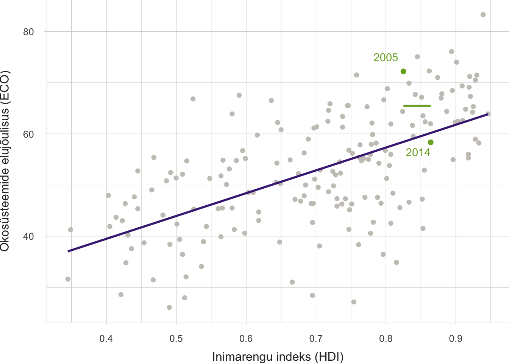
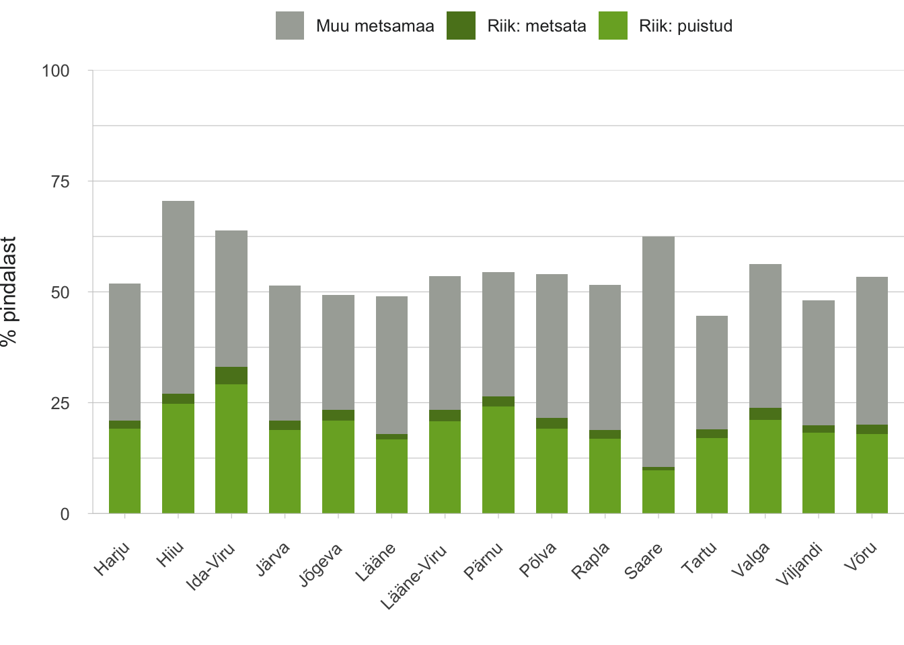

Sissejuhatus
- Looduskeskkonna avalik kasutamine edendab demokraatiat keskkonnaõigluse ja jagatud looduskogemuse kaudu.
Seda soodustab Eestis looduses käimise ja looduse tundmise järjepidevust kandev kultuur. Asulates on rohealade planeerimine oluline demokraatiat edendav ja hoidev protsess. Siiski ei ole loodusalade toimimist avaliku ruumina terviklikult planeeritud ega uuritud. Ka keskkonnahüvede ja -riskide õiglase jaotuse põhimõtted vajavad riiklikku arendamist.
- Eesti maakattest moodustavad loodusalad valdava osa ja inimesed saavad tänu igaüheõigusele neid kasutada.
Loodusalade avalikku kasutamist on hakanud kohati pärssima kättesaadavuse ja ligipääsetavuse halvenemine eramaal ning metsamaastike miljööväärtuse vähenemine lageraiete tõttu. 21. sajandi keeruliste keskkonnaprobleemide ees seistes ei tule ühiskonnale kasuks, kui inimeste arusaam loodusest ja oskused seal toime tulla ahenevad loodus- ja matkaradade külastamisel kogetuks.
- Eesti elu- ja ärikeskkonna regionaalne eelis rikka loodusega riigina on küsitav.
Meie ökosüsteemide seisund ei ole kestlik ning loodusest saadavad hüved on vaesumas. Loodusalade planeerimises on vaja pöörata senisest rohkem tähelepanu elukeskkondade tervisemõjudele, inimeste erivajadustele ning looduskeskkonna läbimõeldud kasutamisele õppimise ja sotsiaalsete suhete arendamise eesmärgil.
Looduskeskkonna seisundist keskkonnaõigluse ja keskkonnademokraatiani
Käesoleva peatüki eri osades uurime, kui vabalt saavad Eesti inimesed looduses käia ja looduse üle otsustada ning milliseid hüvesid ühiskond loodusest saab. Nende küsimuste laiem kontekst on avaliku ruumi ja demokraatlike valitsemisvormide seos looduskeskkonnaga. See kontekst on keeruline, ajaloos muutuv ja üleilmsete megatrendide tugeva surve all, nii et vaevalt saab osutada ühele „õigele“ lahendusele praeguse või tulevase Eesti jaoks. Küll saab praeguste teadmiste valguses välja tuua peamised inimarengu seisukohalt olulised teemad.
Kõigepealt keskkonnaseisund: iga inimese heaolu aluseks on toimivad ökosüsteemid, mille panus avaliku ruumi kvaliteeti oleneb otseselt maakasutuse viisidest ning maa omandi- ja valitsemisvormidest. Siit lähtub ühiskonnakorralduslik ülesanne: mõista, planeerida ja valitseda ökosüsteemidest lähtuvaid hüvede voogusid ning nende jaotust ühiskonnaliikmete vahel. Kui kohaldame selle ülesande füüsilisele ruumile, jõuamegi käesoleva peatüki sotsiaalse põhiküsimuseni: kellel on õigus ja juurdepääs konkreetse ala hüvistele ning võimalus nende kujundamisel kaasa rääkida? “Neid õigusi ja juurdepääsu saab käsitleda keskkonnaõigluse (ingl environmental justice) vaatevinklist: mida ühtlasem on ala hüvistest osasaajate jaotus, seda väiksemaks kujuneb keskkonnast tulenev ebavõrdsus ühiskonnas.” Võimalust keskkonna kujundamisel kaasa rääkida, omades ja jagades ka asjakohast teavet, katab aga keskkonnademokraatia mõiste. Keskkonnademokraatia eesmärk avalikus ruumis on hoida ja parandada sealsete ökosüsteemide seisundit lähtuvalt keskkonnahüvede ja -riskide õiglase jaotuse põhimõttest.
Nende otseselt heaolu puudutavate teemade jätkuna võib näha looduskeskkonna avaliku kasutamise kaudu loodavaid demokraatlikke väärtusi. Näiteks teadvustati juba rohkem kui sajand tagasi avalike parkide rolli linnakodanike ühiste moraalsete ja esteetiliste väärtuste, väärika käitumise ning võrdsel alusel sotsiaalse läbikäimise edendamisel (Mattson 1998). Tänapäeval võib looduskogemus kujundada ühiskonna sidusust isegi siis, kui loodust kogetakse omapäi ja jagatakse virtuaalses suhtluses. Eestiski organiseeruvad tuhanded inimesed looduspiltnike, loodusandide korjajate ja keskkonnaprobleemide vaagijate ühismeedialehtedel, mille roll demokraatias pole küll ühene, kuid on kahtlemata olemas. Veel vahetumalt kujundab sidusat kultuuriruumi ühistegevus. Viimastel aastakümnetel on meil kiiresti arenenud avalikke hüviseid edendavad talgutööd looduses, mille juured on omakorda külaühiskondade varasemas talgukultuuris. Eestimaa Looduse Fond alustas looduses talgute korraldamist juba 1990. aastate lõpul looduskaitse eesmärgil. Kõige suuremat rahvusvahelist tähelepanu on pälvinud 2008. aastal Eestist alguse saanud prügikoristustalgud, millest on omakorda välja kasvanud maikuu esimesel laupäeval peetav „Teeme ära!“ talgupäev oma elukeskkonna heaks. Näiteks 2018. aastal osales rohkem kui 53 000 inimest ligi 2200 Eesti paigas (www.teemeara.ee).
Riiklik vaade peaks seega sisaldama arusaama, millist uut poliitilist kultuuri aitab looduskeskkonna avalik kasutus luua.
Riiklik vaade peaks seega sisaldama arusaama, millist uut poliitilist kultuuri aitab looduskeskkonna avalik kasutus luua. Näiteks areneb jõudsalt biotsentristlike argumentide (looduse iseväärtus ja subjektiõigused) arvestamine valitsemisel, eriti kui neid vahendab põlisrahvaste kultuur (Espinosa 2017). Kuuluvustundel, bioloogilisel päritolul ja vahetul looduskogemusel põhinevad keskkonnaeetika argumendid on leidnud oma koha Eesti õigus- ja moraalinormide arutelus (nt Oja jt 2003).
Looduskeskkonna ühiskondlik roll vajab senisest terviklikumat jälgimist
Looduskeskkonna peatüki ajendiks oli tõdemus, et Eestis puudub terviklik ajakohane ülevaade looduskeskkonna avaliku kasutamise ja selle üle otsustamise võimalustest seostatuna inimeste heaolu ja ühiskonna demokraatliku arenguga. Kümme aastat tagasi järeldasid Maaris Raudsepp ja teised (2009) peamiselt kaudsete andmete põhjal, et Eesti inimesed tajuvad teravalt küll eri tüüpi sotsiaalset ebaõiglust, kuid seejuures keskkonnaõiglust eriti ei teadvusta. Sestsaadik on lisandunud palju uut teavet hüvede kohta, mida inimesed loodusega kokkupuutes saavad või looduse seisundi halvenemisel kaotavad (nt ten Brink jt 2016). Juurdepääs teabele on ka ise üks keskkonnaõiglust ja demokraatiat siduvatest komponentidest, mida Eestil tuleb Aarhusi konventsiooniga liitununa tagada alates 2001. aastast. Sama konventsiooniga on tagatud põhiõigus keskkonnaotsuste tegemisest osa võtta ning juurdepääs keskkonnaalasele õigusemõistmisele. Need õigused on omakorda tuletatud loodusvarade jätkusuutliku kasutamise ja säästva arengu eeldustest. Kokkuvõttes on säästval arengul, keskkonnaõiglusel ja kodanikuühiskonda kaasaval demokraatial Euroopa kultuuriruumis tihe seos (Barnes ja Hoerber 2013).
Looduskeskkonda tähistav ruumiline põhimõiste on käesolevas aruandes loodusala – loodusliku või poolloodusliku kooslusega maa- või veeala. See järgib looduses viibimise ja looduskülastuste terminoloogiat (Kajala jt 2008) ning vastab inimarengu aruandes 2014/2015 „looduslike ehk puhveralade“ mõistele, mille all mõeldi „ökosüsteemide osa, milles on valdavad looduslikud protsessid ning domineerivad pärismaised liigid oma loomulikus keskkonnas (looduslikes elupaikades)“ (Terasmaa ja Pajula 2015, lk 140). Enamik maakatteklassifikatsioone eristab selgemini loodusalade vastandid – tehisalad, nagu ehitiste alla jäävad või kaevandusalad, ning agraarökosüsteemidega põllumajandusalad. Viimaste pindala ja paiknemise muutused võimaldavad hinnata ka säilinud looduskeskkonna hulka ning seisundit globaalselt ja piirkonniti.Loodusala – loodusliku või poolloodusliku kooslusega maa- või veeala.
Loodusalade kogum maastikul moodustab rohevõrgustiku (planeerimisseaduse § 6 nimetatud „roheliseks võrgustikuks“, mis koosneb tuumikaladest ja rohekoridoridest). Mõiste „roheala“ on planeerimisseaduses vastuoluliselt laiem, hõlmates mis tahes loodusliku või inimtekkelise päritoluga taimkattega ala. Selguse huvides kitsendatakse käesolevas aruandes rohealade mõistet üksnes asulates paiknevatele loodus- ja looduseilmelistele aladele (pargid, haljasalad, kalmistud jt). Viimaste taimestik on sageli kultiveeritud ja koosneb teadlikult valitud võõrliikidest, mis omakorda peegeldab asulavälise ja -sisese looduse erinevat käsitluskultuuri Eestis (Magnus ja Remm 2018).
Eesti looduse seisundi koondnäitajad on halvenenud
Eesti maakattest moodustavad loodusalad valdava osa, sealhulgas metsamaa 51,4% (riigile kuuluv 26,2%), sood 4,6%, põõsastikud 1,5% ja veekogud 5,7% (Raudsaar jt 2018). See üldjaotus on 21. sajandil vähe muutunud, kuid asulate laienemine (riikliku statistika andmebaasi järgi keskmiselt 1000 hektarit aastas perioodil 2002–2017) on üleeuroopalises võrdluses suhteliselt kiire ega vasta Euroopa Liidu pikaajalisele keskkonnaeesmärgile. “Üldisemalt on alarmeeriv tagasiminek riikidevahelises keskkonnaalase tulemuslikkuse indeksis (ingl Environmental Performance Indec, EPI), mis võeti ökosüsteemide suhtelise seisundi mõõdikuks Eesti inimarengu aruandes 2014/2015 (Terasmaa ja Pajula 2015).” Eesti on langenud kümne aastaga maailmas 26. kohalt 48. kohale, sealhulgas ökosüsteemide elujõulisuse puhul 7. kohalt 59. kohale. Viimast kajastab kompleksindeks, mis hõlmab ka kliimamõju- ja õhusaastenäitajaid, aga ka looduskeskkonda eraldi vaadates on Eesti positsioon taandunud elurikkuse ja elupaikade seisundi puhul 17. kohalt 24. kohale ja metsade puhul 124. kohalt 129. kohale (Wendling jt 2018). Globaalses võrdluses on ökosüsteemide elujõulisus suurem kõrgema inimarengu indeksiga riikides, kuid varieeruvus on suur (joonis 3.0.1).
Eesti tõus inimarengu sotsiaal- setes näitajates on saavutatud ebaproportsionaalselt kõrge ökoloogilise hinnaga.
Eesti tõus inimarengu sotsiaalsetes näitajates on saavutatud ebaproportsionaalselt kõrge ökoloogilise hinnaga. [a] EPI arvutuskäik on keeruline ja võib sisaldada vigu, kuid eeltoodud trendide põhjused, pööratavus ning üldisemalt loodusalade seisund ja kaasnevad hüved vajavad Eestis riiklikku tähelepanu. Riikidevahelises võrdluses on Eesti Põhjamaade ja Balti riikide seas praegu viimane ja teinud 21. sajandil läbi kõige suurema languse (Wendling jt 2018). Seega pole meil regioonis „puhta loodusega“ riigi konkurentsieelist ning paistab koguni, et hiljutine tõus inimarengu sotsiaalsetes näitajates on saavutatud ebaproportsionaalselt kõrge ökoloogilise hinnaga (joonis 3.0.1). Viimasega haakub riigi mahajäämus ökoinnovatsioonis, mida näitab Euroopa Komisjoni keskkonna peadirektoraadi koostatav ökoinnovatsiooni indeks. Samal ajal püsib Eestis suur keskkonnaturvalisus – inimestel on ebatõenäoline kaotada juurdepääs puhtale õhule, veele ja energiaallikatele või hukkuda looduskatastroofis (Moghim ja Garna 2019).
Joonis 3.0.1. Inimarengu indeksi ja ökosüsteemide elujõulisuse indeksi seos 179 riigi põhjal ning Eesti positsiooni (rohelised punktid, aastad) muutus 2005–2014(%)

Allikas: autori joonis. Seos põhineb inimarengu indeksi (HDI) puhul ÜRO arenguprogrammi (http://hdr.undp.org/en/data) ja ECO puhul Wendling jt (2018) andmetel. ECO puhul on kompleksindeksi osakaaludest arvutatud kesk- mine lähteaasta (2005; algandmed 2001–2007) ja lõpuaasta (2014; algandmed 2010–2017), viimasega ongi seosta- tud HDI (2014). Rõhtjoon tähistab ECO taset Eesti 2014. aasta inimarengu aruandes (Terasmaa ja Pajula 2015), mida ei ole tagasiulatuvalt korrigeeritud ja mille seisundiaasta oli täpsustamata.
Eesti looduse seisundi koondnäitajad on halvenenud
Loodusalade hulga ja paiknemise kõrval kujundab Eestis loodusalade kasutust kolm peamist ühiskondlikku eripära: vähene rahvastikutihedus, looduses liikumise igaüheõigus (Sepp ja Lõhmus, käesolev kogumik) ning lähiajaloo maa-asustusest pärinev vaimne kultuuripärand ka linnaelanikel. Üleilmses võrdluses osutavad need suurele isiklikule vabadusele valida looduses viibimise viisi, kohta ja kestust – näiteks harjuda meelispaigana kasutama võõrast eravaldust. Looduses viibimist soodustavad Eestis veel ka piirkonna ja looduse suhteline turvalisus, riigimetsa suur pindala ja sealne teedevõrk. Neis tingimustes võiks oodata, et looduskeskkonna kasutamist piiravad esmajoones elanike endi ajalised ja liikumisvõimalused, mis üksnes lokaalselt – peamiselt suuremate linnade mõnes osas – avalduvad loodusalade ebapiisavusena (vt ka Sepp ja Lõhmus, käesolev kogumik).
Kuigi loodusalasid saab külastada igaüheõiguse alusel, ahenevad nende kasutusvõimalused.
Eesti loodusalasid ja nende külastusvõimalusi koos käsitledes selgub, et kuigi asulaväliste loodusalade külastamine igaüheõiguse alusel kujundab neist pindala poolest suurima osa Eesti avalikult kasutatavast (jagatud) ruumist, ahenevad nende kasutusvõimalused. Põhjuseks on kolme tüüpi maakasutusotsuseid, mille tervikmõju – arvestades vastukaaluna liikumis- ja navigeerimisvõimaluste paranemist – pole uuritud. Lisaks neile otsustele võib liikumist loodusaladel piirata ka kaitsealade rajamine, kuid avaliku kasutuse konflikte on seejuures põhjustanud peamiselt vaid mootorsõidukite kasutuspiirangud veekogudel (nt Vooremaa järvedel).
1. Eraomanikud piiravad avalikku kasutust. Igaüheõigus tasakaalustab põhiseadusliku liikumisvabaduse tingimusega vältida keskkonnahäiringuid ja mitte kahjustada omaniku huve ja omandit. Omanik saab, oma tahet selgelt väljendades, keelata oma maal viibimise või seal loodussaaduste korjamise (Kask jt 2015). Ainus asjakohane mõju-uuring pärineb Eestis 2008. aastast, mil erametsale seatud liikumispiiranguga oli elanikel veel vähe negatiivseid kogemusi, kuid piirangu tekkimisel prognoositi oma liikumisteede muutmist (Kaldaru 2008). Piirangud on sealtpeale ilmselt laienenud, kuivõrd jätkub 1993. aastal alanud ja pikale veninud maareformi mõju ning metsamaa müük on jätkuvalt aktiivne. Ametkondlikult on käsitletud avalikult kasutatavate teede, konkreetselt veekogude avalikele kallasradadele juurdepääsu sulgemist (Riigikontrolli 2015. aasta audit; Poom ja Sepp, käesolev kogumik). Juurdepääsu- ja tähistusprobleeme on leitud ka teistes külastusväärsetes kohtades. Ühiskonna tasakaalustatud arengu huvides vajab seega analüüsimist eraomanike, nendel maal käivate inimeste ja avaliku võimu vaheline suhtlus – tõenäoliselt saab sedakaudu mõningaid vastuolusid ja puudusi ennetada ja leevendada.
2. Riigimetsa miljööväärtus väheneb raiete tõttu. Lageraiete pindala on kõigis metsades kasvanud, sealhulgas riigimetsas pärast suhteliselt stabiilset perioodi 1995–2008 keskmiselt 50% võrra (alates 2015. aastast >10 000 ha aastas; Raudsaar jt 2018). Raietega kaasnev miljööväärtuse vähenemine järeldub nii inimeste esteetilisest vastumeelsusest raiesmike ja raietööde jälgede suhtes (nt Gundersen ja Frivold 2008; Eesti kohta Kõivik 2014) kui ka praktilistest tagajärgedest, nagu marja- ja seenemetsade kadumine. Neid hinnanguid peegeldab keskkonnateadlikkuse küsitlus, kus liigset metsaraiet peeti 2018. aasta olulisimaks keskkonnaprobleemiks ja Riigimetsa Majandamise Keskuse (RMK) usaldusväärsus oli võrreldes 2016. aastaga tunduvalt vähenenud (Turu-uuringute AS 2018). Kohalike sagenenud protestid raiete vastu näitavad tahet kujundada oma elukeskkonda vähemalt riigimaal. Maakondadest eristub metsapuhkuse võimalustelt Saaremaa (ka Läänemaa), kus on kõige vähem riigimetsa ja eraomanike seatud piirangud potentsiaalselt suurima mõjuga (joonis 3.0.2). Samal ajal on Saare- ja Läänemaal riigimetsa suhteliselt vähe raiutud (metsata metsamaad 2017. aastal u 7% riigimetsa pindalast), eriti võrreldes Kagu-Eesti maakondade ja Ida-Virumaaga (üle 12%).
3. Külastusvõimalused koonduvad ja üheülbastuvad. Kuigi investeeringud külastustaristusse hoiavad rahulolu loodus- ja matkaradadega suurena, ei võimalda need kõiki looduskasutuse viise ega sobi kõigile ühiskonnagruppidele (Sepp ja Lõhmus, käesolev kogumik). Uuringud maailmas näitavad, et harjumus igal aastal loodusalasid külastada toob inimeste parema tervise ja ärahoitud tervishoiukulude kaudu ühiskonnale suurt kasu – ainuüksi vaimse tervise kaudu hinnanguliselt kümme korda rohkem kui turism ja 100–1000 korda rohkem kui kaitsealade administreerimise kulu (Buckley jt 2019). Samal ajal võivad inimeste eelistused looduses liikumisel märkimisväärselt lahkneda loodusväärtuste paiknemisest (Hornigold jt 2016). Seepärast vajavad Eestis võrdlevat selgitamist nii kaitsealade külastamise kui ka kodukohas looduspuhkuse võimaluste keskkonna- ja tervisemõjud. Kultuuri-, sealhulgas poliitilise kultuuri küsimus on, kas piirdumine loodus- ja matkaradade külastamisega kitsendab inimeste võimet mõista ja rääkida kaasa keskkonda puudutavates otsustes.
Joonis 3.0.2. Metsamaa, sealhulgas riigimetsa (eristatud puistud ja metsata metsamaa) osakaal maakondade üldpindalast 2017. aastal

Allikas: Raudsaar jt 2018.
Koduümbruse loodus ja asulate rohealad vajavad planeerijate tähelepanu
Loodusalade avaliku kasutamise seos demokraatiaga on kõige ilmsem inimese kodukohas, kus kogukonnad saavad kohtuda isegi napil töövälisel ajal ning loodusesse pääsevad hõlpsamini liikumisraskuste või muude erivajadustega inimesed. Õigus kodukoha loodusele oma elukeskkonna (sh töökeskkonna) osana on ka põhiõigusele kõige lähemal ning olulised keskkonnaõigluse küsimused on inimeste võrdne kohtlemine asustusruumi planeerimisel ja nende võimalus planeerimises osaleda (Jennings jt 2012). Koduümbruse looduse küsimused – ligipääs, kvaliteet ja tulevikuperspektiiv – on võimendunud asulates, kus rohealade hüvesid kasutab palju inimesi, kuid tugev on ka alternatiivne maakasutushuvi, mis enamasti kahjustaks roheala pöördumatult või piiraks selle kasutust. Seepärast on linnaelanike ligipääs rohealadele valitud ka üheks Eesti säästva arengu näitajaks, mida tuleks silmas pidada kogu riigi strateegilises planeerimises (Oras jt 2018).
Harjumus igal aastal loodusalasid külastada toob inimeste parema tervise ja ärahoitud tervishoiukulude kaudu ühiskonnale suurt kasu.
Eesti rohealadele on seni pööratud tähelepanu peamiselt üldistatult kogu linna või linnaosa tasemel (Sepp ja Lõhmus; Orru jt, käesolev kogumik). Ilmneb, et näiteks Euroopa Liidu suuremate linnade elanike küsitluses on Tallinn keskkonnanäitajate (õhukvaliteet, müratase, rohealad) osas keskmik, kõrgemalt hindavad elanikud linna heakorda. Samal ajal seostub rohealade üldine kättesaadavus palju väiksemal määral linnaelanike üldise sooviga konkreetses linnas elada kui näiteks turvalisus või elukoht (Eurobarometer 2016). Seega on elanike eripära ja soovide arvestamine ning keskkonnaseisundi parandamine linna rohealade planeerimisel keeruline protsess kohaliku võimu ja kogukonna koostöös. Eesti rohealade planeerimises on nõrk tervist (Orru jt, käesolev kogumik) ja erivajadusi arvestav ning kodu- ja tööpaika ühendav funktsioon, samuti seos riiklike poliitikadokumentidega. Näiteks puuduvad looduskeskkonna aspektid Eesti vaimse tervise strateegiast (2016), ehkki on teada, et looduses viibimine maandab tõhusalt psüühika- ja käitumishäirete olulisi riskitegureid, nagu stress ja vaimne kurnatus (ten Brink jt 2016). Linnaplaneerimise senine praktika viib pigem ikka rohealade vähendamiseni; rohealade vähesuse puhul on omakorda läbi mõtlemata võimalused, kuidas inimesi sinna suunata. Näiteks koolide ja lasteaedade võimalused tagada õuesõpet on kohapeal mõistetavalt piiratud, kuid rohekoridoride kaudu saaks eri kohti funktsionaalselt ühendada.
Eraldi tähelepanu nõuab looduses niisuguste teadmiste omandamine, mille käigus kujundatakse oskusi maastikul liikuda, loodussaadusi leida ja kasutada. Mõni neist pärimusliku taustaga oskustest, näiteks ravimtaimede tundmine, on Eestis hääbumas, teised (nt marjul ja seenel käimine) edenevad tänapäeval uues suunas (Sepp ja Lõhmus, käesolev kogumik). Neist oskustest võiksid riiklikku planeerimist vajada näiteks tsiviilkaitseoskused tulla toime katastroofitingimustes, sealhulgas juhendada looduses teisi. Inimesed, kes tunnevad hästi teatud piirkondi ja seal regulaarselt käivad, on ühtlasi võimalikud infoallikad nende alade kohta. “Riik saab seda kasutada oma territooriumi keskkonnaseisundi kulutõhusaks jälgimiseks kodanikuteaduse (ingl citizen science) vormis, mille korraldus, tehnoloogilised lahendused ja analüüsimeetodid pakuvad suurt huvi kogu maailmas.” Paljudel inimestel on säilinud seos maakohtadega, kus elasid nende vanemad või vanavanemad, teised avastavad uute maakodude ümbrust omal käel. Linnainimestel jäävad aga praktilised loodusoskused kergesti unarusse.
Tulevikuvaade
Kohandumine Maa keskkonnamahutavusega kujuneb 21. sajandi inimühiskondade eksistentsiaalseks probleemiks. Selle vältimatu osa on ka loodusalade igakülgne lõimimine inimeste elukeskkonna osaks, et otstarbekalt kasutada, säilitada ja kujundada looduse pakutavaid hüvesid. Need tegevused omakorda lähtuvad kultuurinähtusena senistest teadmistest ja tavadest, kusjuures arenguvõimalusi piiravad ja võivad lausa sulgeda sotsiaalsed konfliktid ning senise elu- ja majanduskorralduse liigne jäikus (Cumming 2018). Eesti jätkusuutlikuks arenguks on strateegiliselt oluline mõista siinsete ökosüsteemide võimalusi ja kohelda neid parimal moel, teadvustades, et praegune trend on negatiivne.
Eesti jätkusuutlikuks arenguks on strateegiliselt oluline mõista siinsete ökosüsteemide võimalusi ja kohelda neid parimal moel, teadvustades, et praegune trend on negatiivne.
Raamistikus „loodus-ühiskond-kultuur“ räägivad järgnevad artiklid lahti Eesti looduskeskkonna avaliku kasutamise põhiteemad: kuidas inimesed looduskeskkonda kasutavad (Sepp ja Lõhmus, käesolev kogumik), mis kasu nad sellest saavad (Orru jt, käesolev kogumik), kuidas heaolu suurendavat looduskeskkonda planeeritakse (Poom ja Sepp, käesolev kogumik) ning mil moel saavad elanikud planeerimises osaleda või seda mõjutada (Vahtrus jt, käesolev kogumik). Nende artiklite ühisjoon on arusaam sellest, et loodusalad toimivad avalikus kasutuses omavahel seostatud maastikuna, mille eri osadel on erinevad funktsioonid ning planeerimis- ja valitsemisvõtted. Vastavalt tuleb keskkonna- ja ruumiplaneerimine lõimida kõikidesse valitsusvaldkondadesse. Niisugust läbivat tervikut ja koostoimet paljudes olulistes valdkondades veel ei ole: loodusalade eesmärgid arengudokumentides ja planeeringutes on hägused ning kogukondi ja nende teadmisi jäetakse loodusalade kavandamisest sageli eemale.
Teiseks märgivad kõik teemakäsitlused inimgruppide erinevat osasaamist loodusalade hüvedest või võimalustest, hoolimata paljude ühtlustavate põhimõtete rakendamisest (nt igaüheõigus, Aarhusi konventsiooni sätted, üleriigiline rohevõrgustiku põhimõte ja loodusalade mitmekesine haldusvõttestik eri tasanditel). See viitab vajadusele luua Eestis riiklik keskkonnaõigluse arendusprogramm, mis sisustaks tulevikku vaatavalt elanike ootused ja õigused oma elukeskkonnale, sidudes ja kujundades eri komponente. Olemasolevad programmid keskkonnaõiglust kas ei käsitle üldse või on vananenud, nagu näiteks Eesti säästva arengu riiklik strateegia „Säästev Eesti 21“ aastani 2030 (vastu võetud 2005). Konkreetselt loodusaladesse puutuvalt on põhjust ajakohastada ka Riigimetsa Majandamise Keskuse eesmärke ja valitsemispõhimõtteid, kuivõrd see asutus haldab suuremat osa avaliku juurdepääsuga loodusaladest ja nende taristust. Sellist ootust näitavad nii värskeim elanikkonna keskkonnateadlikkuse küsitlus (Turu-uuringute AS 2018) kui ka kogukondade vastasseis riigimetsa haldajaga (nt Vihma 2019); probleem on püstitatud ka 2030. aastani ulatuva metsanduse arengukava lähteülesandes.
Lähikümnendite üldpõhimõte Eesti looduse avaliku kasutamise juhtimisel võiks niisiis olla mitmekesiste, kestlike ning inimarengut terviklikult ja õiglaselt toetavate loodusseoste arendamine. See tähendab senisest suuremat tähelepanu looduskeskkonnast saadavatele hüvedele füüsilise ja vaimse tervise, turvalisuse ja sotsiaalsete suhete seisukohalt.
Viidatud allikad
Barnes, P. M., Hoerber, T. C. (eds.) 2013. Sustainable Development and Governance in Europe. The Evolution of the Discourse on Sustainability. Routledge Advances in European Politics. London: Routledge.
Buckley, R., Brough, P., Hague, L., Chauvenet, A., Fleming, C., Roche, E., Sofija, E., Harris, N. 2019. Economic value of protected areas via visitor mental health. – Nature Communications, 10, 5005.
Cumming, G. S. 2018. A review of social dilemmas and social‐ecological traps in conservation and natural resource management. – Conservation Letters, 11 (1), e12376.
Espinosa, C. 2017. Bringing about the global movement for the rights of nature: sites and practices for intelligibility. – Global Networks, 17 (4), 463–482.
Eurobarometer 2016. Flash Eurobarometer 419. Quality of Life in European Cities 2015. European Commission: Directorate-General for Regional and Urban Policy.
Gundersen, V. S., Frivold, L. H. 2008. Public preferences for forest structures: a review of quantitative surveys from Finland, Norway and Sweden. – Urban Forestry & Urban Greening, 7, 241–258.
Hornigold, K., Lake, I., Dolman, P. 2016. Recreational use of the countryside: no evidence that high nature value enhances a key ecosystem service. – PloS ONE, 11 (11), e0165043.
<p id=“Jennings2012”>Jennings, V., Johnson Gaither, C., Gragg, R.S. 2012. Promoting environmental justice through urban green space access: a synopsis. – Environmental Justice, 5 (1), 1–7.Kajala, L., Almik, A., Dahl, R., Dikšaitė, L, Erkkonen, J., Fredman, P., Søndergaard Jensen, F., Karoles, K., Sievänen, T., Skov-Petersen, H., Vistad, O. I., Wallsten, P. 2008. Külastajate seire loodusaladel – <p id=“Põhjamaade”>Põhjamaade ja Balti riikide kogemustel põhinev käsiraamat. TemaNord 2008: 516. Tallinn: Riigimetsa Majandamise Keskus.
Kaldaru, H. 2008. Metsa mitmekülgne kasutamine. Elanikkonna, erametsaomanike ja väikeettevõtjate küsitlus. Tallinn: Turu-uuringute AS.
Kask, O., Lopman, E., Relve, K., Kuusk, P., Triipan, M., Vaarmari, K., Vahtrus, S., Veinla, H. 2015. Keskkonnaseadustiku üldosa seaduse kommentaarid. Tartu: Keskkonnaõiguse Keskus.
Kõivik, M. 2014. Erinevate raiete esteetiline väärtus. Magistritöö. Eesti Maaülikool.
Mattson, K. 1998. Creating a Democratic Public: The Struggle for Urban Participatory Democracy during the Progressive Era. University Park: Pennsylvania State University Press.
Moghim, S., Garna, R. K. 2019. Countries’ classification by environmental resilience. – Journal of Environmental Management, 230, 345–354.
Oja, A., Keerus, K., Järvik, M., Tamm, G., Joonasson, K., Raudsepp, M., Relve, K., Veski, N., Riiberg, K., Tafel, K., Viia, A. 2003. Keskkonnaeetikast säästva ühiskonna eetikani. Inimese ja looduse vaheline tasakaal kui jätkusuutlikkuse aluspõhimõte. SEI väljaanne nr 5. Tallinn: Säästva Eesti Instituut, SEI-Tallinn ja Keskkonnainvesteeringute Keskus.
Oras, K., Enno-Sakwan, E., Niinepuu, E. (koost.) 2018. Säästva arengu näitajad. Tallinn: Statistikaamet.
Raudsepp, M., Heidmets, M., Kruusvall, J. 2009. Environmental justice and sustainability in post-Soviet Estonia. – Agyeman, J., Yelena Ogneva-Himmelberger, Y. (eds.). Environmental Justice and Sustainability in the Former Soviet Union. Cambridge: MIT Press, 215–237.
Riigikontroll 2015. Kallasradade kasutamine. Kas omavalitsused ja Keskkonnainspektsioon on teinud kõik endast sõltuva, et inimene pääseks randa ja saaks kallasrajal liikuda? Riigikontrolli aruanne Riigikogule. Tallinn, 8. detsember 2015.
ten Brink, P., Mutafoglu, K., Schweitzer, J.-P., Kettunen, M., Twigger-Ross, C., Baker, J., Kuipers, Y., Emonts, M., Tyrväinen, L., Hujala, T., Ojala, A. 2016. The health and social benefits of nature and biodiversity protection. A report for the European Commission (ENV.B.3/ETU/2014/0039). London/Brussels: Institute for European Environmental Policy.
Terasmaa, J., Pajula, R. 2015. Ökosüsteemiteenused ja tasakaalu hoidmiseks vajalikud looduslikud alad. – Vetik, R. (toim.). Eesti inimarengu aruanne 2014/2015. Lõksudest välja?. Tallinn: Eesti Koostöö Kogu,137–146.
Turu-uuringute AS 2018. Eesti elanike keskkonnateadlikkuse uuring.
Vihma, P. 2019. Riigimets kui ühisvara ehk kuidas lahendada Ohtu konflikti. – ERR Arvamus, 20.11.2019.
Wendling, Z. A., Emerson, J. W., Esty, D. C., Levy, M. A., de Sherbinin, A., et al. 2018. 2018 Environmental Performance Index. Global Metrics for the Environment: Ranking Country Performance on High-priority Environmental Issues. New Haven: Yale Center for Environmental Law & Policy.